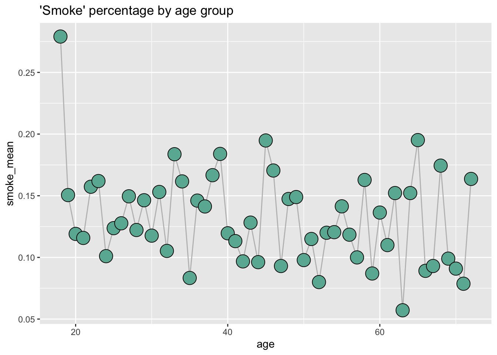

First, I want to understand what the smoke variable is because it isn’t clear by the variable name. From this plot we can see that the percentage of people in a certain age group with age = 1 is not increasing with age. From this I conclude that this variable measures whether an individual is a current smoker and not whether an individual has ever smoked

Second, I want to investigate whether its possible that this study tracks one same-age cohort throughout time. Based on the data set name I think it might. It’ll be quite hard to see this, but one way I can see whether this is true is if there is weakly less people at each age during the period. To do this I create a long table we can easily read off. I clearly see that this is not the case, so I can likely treat these as separate individuals all sampled at once.
age_counts <- cohort %>%count(age)kable(age_counts, format ="markdown")
age
n
18
43
19
93
20
84
21
95
22
89
23
105
24
99
25
97
26
94
27
107
28
90
29
82
30
102
31
98
32
95
33
98
34
99
35
84
36
89
37
92
38
84
39
87
40
92
41
106
42
93
43
78
44
104
45
77
46
88
47
86
48
95
49
94
50
92
51
87
52
100
53
100
54
83
55
99
56
76
57
90
58
86
59
92
60
88
61
100
62
92
63
105
64
92
65
82
66
101
67
86
68
86
69
101
70
99
71
89
72
55
Third, I’ll look at whether smoking increases medical costs more in young or old individuals. To do this I run a regression of smoking costs on smoking level. I find that, while it looks like while smoking and age both clearly increase costs, it doesn’t look like the interaction between age and smoking status has any impact on costs after controlling for smoking and age specific effects.
modelsummary(lm(cost ~ smoke + age + smoke*age, cohort))